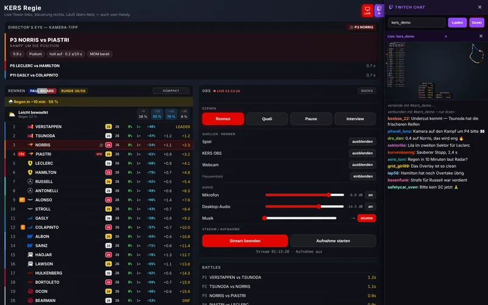

Director’s Eye
The camera hint tells you where something is happening — which duel, which lap, which stop is worth the look.
A second page that never goes on screen — from here you steer what is to be seen.
Under /regie runs a second page from which nothing goes into the
picture: the whole field with tyres, gaps and pit stops, race control, a pace comparison and
the live projection of the championship. From here you show and hide what is due — and, if
you like, control OBS at the same time.
The camera hint tells you where something is happening — which duel, which lap, which stop is worth the look.
Every row of the leaderboard is the button itself: tap it and the camera in the game jumps to that driver — the row flashes briefly. Who you are on is shown by the 🎥 in the row. From your phone just the same.
Charts, championship standings, battle and hotlap boxes can be brought on screen by hand instead of waiting for the automatic.
Enter a channel name or link and the chat slides open on the right — with the stream muted above it if you like. By default KERS reads the chat directly, which also works in browsers that block the Twitch embed. One button switches back to the embed.
Switch on the WebSocket server in OBS and connect in /settings under
OBS control — the control page then shows the OBS card: scenes, sources,
audio, transitions, stream and recording. Docks picks which parts appear there;
your own browser docks from OBS come along too.
Going live always asks first. The OBS password stays encrypted on the PC running KERS.
The WM: Fahrer button switches the standings on screen between drivers, teams and both in turn — with the points system you set in the settings.

/settings. Switching the code off opens the
control page to every device on the network again.